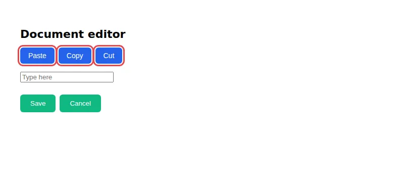

check a11y focus
A toolbar whose Tab order runs backwards
Tab is pressed through the page and every focus step is placed on screen. tabindex values put Cut, Copy and Paste in reverse.
Open the page under test · fixtures/a11y-focus-order/reversed/page.html
Run it
vlmkit check a11y focus fixtures/a11y-focus-order/reversed/page.html
What to look at
Each finding names the two controls and their x positions, so the jump is visible in numbers rather than by pressing Tab.
The fix
Drop the positive tabindex values and let DOM order match visual order.
What vlmkit printed
vlmkit check a11y focus fixtures/a11y-focus-order/reversed/page.html · exit 1 — the command fails, as a gate in CI would
vlmkit check a11y focus
source: fixtures/a11y-focus-order/reversed/page.html
captured 6 focus step(s)
✗ 2 finding(s)
[reverse] Focus moved left within the same row (from `div.toolbar>button.btn-cut` at x=189 to `div.toolbar>button.btn-copy` at x=116). Visual order is L-to-R; check `tabindex` or DOM order.
[reverse] Focus moved left within the same row (from `div.toolbar>button.btn-copy` at x=116 to `div.toolbar>button.btn-paste` at x=40). Visual order is L-to-R; check `tabindex` or DOM order.
report: test-results/a11y-focus-order/page-f9e12f4a/report.md